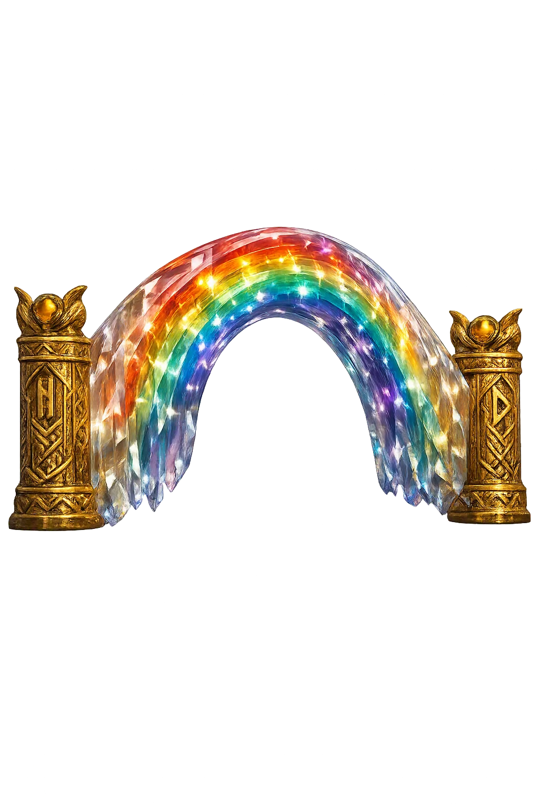
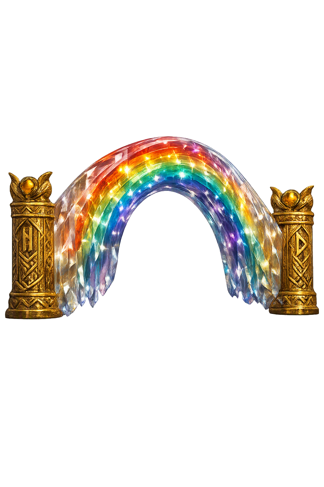

The Authentic Orthography
Rainbow Bridge, Passage, Heimdallr's Watch · Trembling pathway (from bifa, to shake, + rǫst, league)

Unicode restoration and ASCII comparison
ᛒᛁᚠᚱᚬᛋᛏ
The name in its original Norse form. Bifrǫst (ᛒᛁᚠᚱᚬᛋᛏ) is attested in the source tradition — “Trembling pathway (from bifa, to shake, + rǫst, league)”. Its original diacritics and script distinctions carry the full phonetic and orthographic weight of the source tradition.
bifrost
Reduced to plain bifrost, the name loses everything that made it specific: original diacritics and script distinctions. What remains is an ASCII string that machines can parse but that no longer speaks with its original voice.
Bifrǫst
The Unicode restoration recovers what ASCII flattened. Bifrǫst restores original diacritics and script distinctions, returning the name to its original written dignity. The domain encodes to Punycode, but the browser displays the truth.
Bifrǫst.com → xn--bifrst-zcc.com
The non-ASCII characters in Bifrǫst are encoded while the ASCII remains visible. To the DNS, it is Punycode. To humanity, it is Bifrǫst.
How Bifrǫst travels from ancient script to the modern URL
Owned, ideal, and ASCII forms of Bifrǫst
Bifrǫst
Restores ᛒᛁᚠᚱᚬᛋᛏ. The live temple domain — bifrǫst.com.
bifrost
Flattens ᛒᛁᚠᚱᚬᛋᛏ. The plain ASCII fallback — what DNS and legacy systems see.
How Bifrǫst was spoken
The domain of Bifrǫst
In the norse tradition, Bifrǫst is the burning rainbow that joins Miðgarðr to Ásgarðr — the trembling path, from bifa 'to shake' and rǫst 'a league, a distance to be traversed.' The gods themselves call it Ásbrú, the Æsir-bridge, and ride it daily to hold court beneath Yggdrasill.
The name encodes a structure built to fail: strong beyond any other work, as Snorri insists, yet fated to shake, to burn, and at last to break beneath the sons of Muspell. Between its watchman's horn and its final shattering, the bridge is the measure of the distance between gods and everything else.
From bifa 'to shake' and rǫst 'league, path': the bridge is a trembling span of three colors, made with more skill and cunning than any other structure.
Snorri explains the red stripe as burning fire: the bridge is warded in flame so that frost-giants and mountain-giants cannot climb it into heaven.
At Himinbjǫrg, where the bridge reaches heaven's edge, Heimdallr keeps guard — hearing the grass grow, seeing a hundred leagues by night, holding the Gjallarhorn.
When the sons of Muspell ride over it toward the field of Vígríðr, the bridge shatters beneath them; the horses of the gods must swim the flood.
Stories of Bifrǫst
Bifrǫst is the one road between the worlds of gods and men, and every story told of it is a story about passage: who may cross, what the crossing costs, and what happens when the road itself gives way. Snorri describes it as the strongest of all constructions and yet builds its destruction into the end of the world. The poems of the Codex Regius, which read the name as Bilrǫst, already know that the bridge will break. Around it gather Heimdallr the watchman, the daily assize at Urðr's well, and the solitary figure of Þórr, who is forbidden the span and wades the rivers instead.
Gangleri asks how the gods pass from heaven to earth, and Hárr answers that they built Bifrǫst from earth to heaven: a bridge of three colors, very strong, and made with more skill and cunning than any other work. The red in the rainbow, Hárr explains, is burning fire, so that the frost-giants and mountain-giants cannot mount into heaven over the bridge.
At the bridge's head, where it reaches the edge of heaven, stands Himinbjǫrg, the hall of Heimdallr, the watchman of the gods. He needs less sleep than a bird, sees a hundred leagues by night as by day, and hears the grass growing on the earth and the wool on the sheep. Beside him waits the Gjallarhorn, whose blast is heard in all worlds.
Every day the Æsir ride up over Ásbrú — the Æsir-bridge — on their named horses, to sit in judgment at the ash Yggdrasill. But Þórr does not ride. Grímnismál says that he must wade the rivers Kǫrmt and Ǫrmt and the two Kerlaugar each day on his way to the doomstead, for the Æsir-bridge stands all aflame and the holy waters seethe.
Snorri gives the same exception a physical cause: the thunder-god's passage, with the heat and weight of his thunder, would break the span. The strongest of the gods is thus the one who walks — the bridge that carries everyone else cannot carry him.
When the end comes, Heimdallr stands and winds the Gjallarhorn to wake the gods. Surtr advances from the south with fire, and behind him ride the sons of Muspell toward the field of Vígríðr. They ride over Bifrǫst, and the bridge breaks beneath them.
The poets of the Codex Regius knew it already: Fáfnismál says that Bilrǫst breaks as the hosts ride across, and the horses must swim in the surge, and Grípisspá repeats the prophecy. The road between worlds is the first great work of the gods to fall — the connection is severed before the battle is even joined.
Some names are nouns; this one is a verb wearing the shape of a thing. Bifrǫst means the trembling way, and everything the tradition says about it honors that grammar: a bridge of fire and color that the gods trust daily and that is fated, precisely because it connects what must be kept apart, to fail at the last. To name a structure after its shaking is to admit that connection is always provisional — that the distance between heaven and earth is not abolished by the bridge but measured by it. Unicode restoration returns that admission to readable form.
Enter Extended Lore